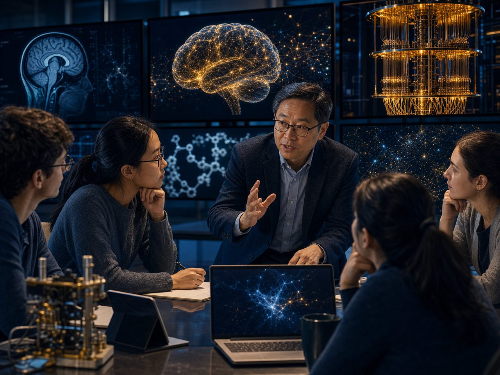
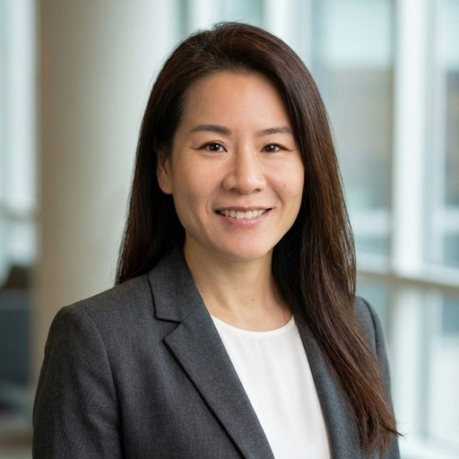

UCLA · Caltech · UCSD · Asia University · China Medical University
Faculty & Speakers
05 Contributors
The people who teach the sixty days.
Visiting faculty and speakers, grouped by the discipline they bring. Affiliations and research areas verified from the program's speaker roster.

Quantum Science & Engineering

Neuroscience & Brain
Pharmacology, Biomarkers & Bioscience
Digital Health & Data
Integrative & Chinese Medicine
Industry & Public Sector
Program Coordination

Iris Yang 楊雅軒
Program · Academic Advisor & Course Coordinator
Applied quantitative researcher and educator working on trustworthy machine learning, reproducible data science, biomedical evidence evaluation, and decision-oriented risk modeling.
MoreLess
Doctoral researcher in Purdue University's Doctor of Technology (D.Tech.) program, with an A.L.M. in Data Science from Harvard Extension School and graduate study in financial engineering. She has taught statistics, data science, and information security at California State University, Los Angeles since 2012, and coordinates the 2026 Summer Biomedical Engineering and Quantum Technology Program at UCLA.